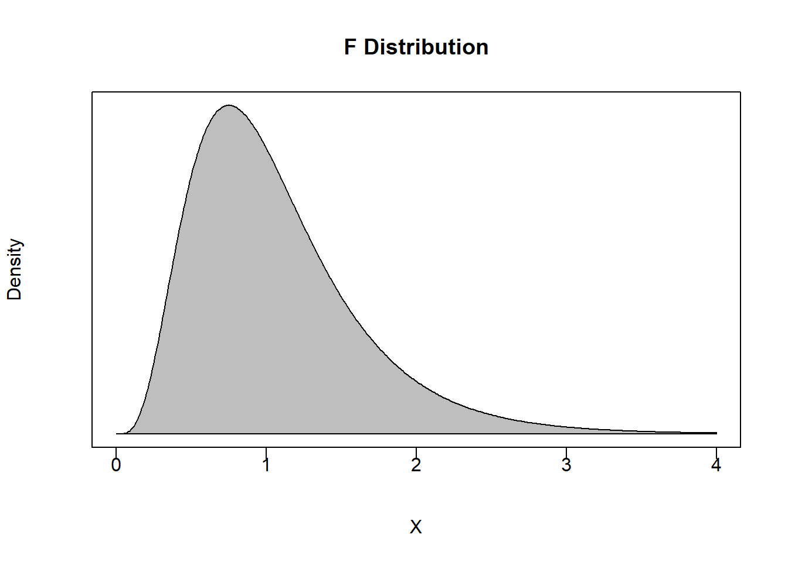

12.2 Conducting a Joint Hypothesis Test
A joint hypothesis test involves four steps:
Estimate an unrestricted model
Impose the null hypothesis and estimate a restricted model
Construct a test statistic under the null
Determine a p-value and conclude
1. Estimate an Unrestricted Model
An analysis begins with a regression model that can adequately capture what you are setting out to uncover. In general terms, this is a model that doesn’t impose any serious assumptions on the way the world works so you can adequately test these assumptions. Suppose we have a hypothesis that two independent variables impact a dependent variable by the same quantitative degree. In that case, we need a model that does not impose this hypothesis.
\[Y_i = \beta_0 + \beta_1 X_{1i} + \beta_2 X_{2i} + \varepsilon_i\]
The model above allows for the two independent variables to impact the dependent variable in whatever way the data sees fit. Since there is no imposition of the hypothesis on the model, or no restriction that the hypothesis be obeyed, then this model is called the unrestricted model.
2. Estimate a Restricted Model
A restricted model involves both the unrestricted model and the null hypothesis. If we wanted to test if the two slope hypotheses were the same, then our joint hypothesis is just like the one in the previous example:
\[H_0:\beta_1=\beta_2 \quad \text{versus} \quad H_1:\beta_1 \neq \beta_2\]
With the null hypothesis established, we now need to construct a restricted model which results from imposing the null hypothesis on the unrestricted model. In particular, starting with the unrestricted model and substituting the null, we get the following:
\[Y_i = \beta_0 + \beta_1 X_{1i} + \beta_2 X_{2i} + \varepsilon_i\]
\[Y_i = \beta_0 + \beta_2 X_{1i} + \beta_2 X_{2i} + \varepsilon_i\]
\[Y_i = \beta_0 + \beta_2 (X_{1i} + X_{2i}) + \varepsilon_i\]
\[Y_i = \beta_0 + \beta_2 \tilde{X}_{i} + \varepsilon_i \quad \text{where} \quad \tilde{X}_{i} = X_{1i} + X_{2i}\]
Imposing the null hypothesis restricts the two slope coefficients to be identical. If we construct the new variable \(\tilde{X}_i\) according to how the model dictates, then we can use the new variable to estimate the restricted model.
3. Construct a test statistic under the null
Now that we have our unrestricted and restricted models estimated, the only two things we need from them are the \(R^2\) values from each. We will denote the \(R^2\) from the unrestricted model as the unrestricted \(R^2\) or \(R^2_u\), and the \(R^2\) from the restricted model as the restricted \(R^2\) or \(R^2_r\).
These two pieces of information are used with two degrees of freedom measures to construct a test statistic under the null - which is conceptually similar to how we perform simple hypothesis tests. However, while simple hypothesis tests are performed assuming a Student’s t distribution, joint hypothesis tests are performed assuming an entirely new distribution: An F distribution.
Roughly speaking, an F distribution arises from taking the square of a t distribution. Since simple hypothesis tests deal with t distributions, and the joint hypothesis deals with \(R^2\) values, you get the general idea. An F-statistic under the null is given by
\[F=\frac{(R^2_u - R^2_r)/m}{(1-R^2_u)/(n-k-1)} \sim F_{m,\;n-k-1}\]
where
\(R^2_u\) is the unrestricted \(R^2\) - the \(R^2\) from the unrestricted model.
\(R^2_r\) is the restricted \(R^2\) - the \(R^2\) from the restricted model.
\(m\) is the numerator degrees of freedom - the number of restrictions imposed on the restricted model. In other words, count up the number of equal signs in the null hypothesis.
\(n-k-1\) is the denominator degrees of freedom - this is the degrees of freedom for a simple hypothesis test performed on the unrestricted model.
In simple hypothesis tests, we constructed a t-statistic that is presumably drawn from a t-distribution. We are essentially doing the same thing here by constructing a F-statistic that is presumably drawn from a F-distribution.

The F-distribution has a few conceptual properties we should discuss.
An F statistic is restricted to be non-negative.
This should make sense because the expressions in both the numerator and denominator of our F-statistic calculation are both going to be non-negative. The numerator is always going to be non-negative because \(R^2_u \geq R^2_r\). In other words, the unrestricted model will always explain more or at least as much of the variation in the dependent variable as the restricted model does. When the two models explain the same amount of variation, then the \(R^2\) values are the same and the numerator is zero. When the two models explain different amounts of variation, then this means that the restriction prevents the model from explaining as much of the variation in the dependent variable it otherwise would when not being restricted.
The Rejection Region is Always in the Right Tail
If we have \(R^2_u = R^2_r\), then this implies that the restricted model and the unrestricted model are explaining the same amount of variation in the dependent variable. Think hard about what this is saying. If both models have the same \(R^2\), then they are essentially the same model. One model is unrestricted meaning it can choose any values for coefficients it sees fit. The other model is restricted meaning we are forcing it to follow whatever is specified in the null. If these two models are the same, then the restriction doesn’t matter. In other words, the model is choosing the values under the null whether or not we are imposing the null. If that is the case, then the f-statistic will be equal to or close to zero.
If we have \(R^2_u > R^2_r\), then this implies that the restriction imposed by the null hypothesis is hampering the model from explaining as much of the volatility in the dependent variable than it otherwise would have. The more \(R^2_u > R^2_r\), the more \(F>0\). Once this F-statistic under the null becomes large enough, we reject the null. This means that the difference between the unrestricted and restricted models is so large that we have evidence to state that the null hypothesis is simply not going on in the data. This implies that the rejection region is always in the right tail, and the p-value is always calculated from the right as well.
4. Determine a P-value and Conclude
Again, we establish a confidence level \(\alpha\) as we would with any hypothesis test. This delivers an acceptable probability of a type I error and breaks the distribution into a rejection region and a non-rejection region.
For example, suppose you set \(\alpha = 0.05\) and have \(m=2\) and \(n-k-1 = 100\). This means that the non-rejection region will take up 95% of the area of the F-distribution with 2 and 100 degrees of freedom.
(Fcrit <- qf(0.95,2,100))## [1] 3.087296If an F-statistic is greater than 3.09 then we can reject the null of the joint hypothesis with at least 95% confidence.
As in any hypothesis test, we can also calculate a p-value. This will deliver the maximum confidence level at which we can reject the null.
pf(q, df1, df2, lower.tail = TRUE)Notice that since the probability is calculated from the left by default (like the other commands), we can use the above code to automatically calculate \(1-p\).